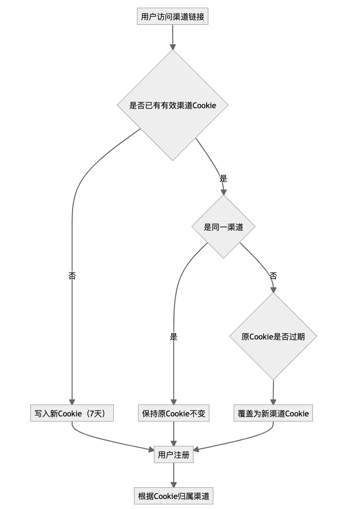

渠道商管理需求说明
1. 项目背景
知口袋作为SaaS服务平台，当前需要引入渠道商推广用户注册与使用服务。为确保推广渠道的管理有序、数据可追溯，平台需建立渠道商信息管理与核心指标统计分析能力，方便内部运营人员了解渠道贡献，优化推广策略。
2. 建设目标
• 实现渠道商的基础信息录入与管理。
• 实现渠道注册用户来源追踪，统计注册数、产品付费等核心指标。
• 实现渠道维度的数据报表，支持查询与导出。
• 暂不涉及渠道商独立后台、不涉及佣金分成计算。
3. 角色与使用对象
• 平台运营人员（唯一角色）：通过运营后台完成渠道商信息管理、数据统计查询、报表导出。
• 渠道商：无直接系统操作，仅作为被管理对象。
4. 业务范围与限制
• 范围：渠道商信息管理、渠道推广效果统计、注册及付费数据汇总。
• 限制：
• 不提供渠道商自助登录后台。
• 不做佣金计算、不涉及财务结算。
• 不做多级渠道（暂仅单层渠道）。
5. 渠道推广规则：
① 渠道识别方式
• 每个渠道商拥有唯一的推广链接，形式示例：
https://client.zhikoudai.com?channel={渠道码}
• 用户通过渠道链接访问后，会在浏览器端种植渠道标识 Cookie，用于后续注册与统计。
② Cookie 策略
• Cookie 名称：channel_id
• 有效期：7 天（168 小时）
刷新策略：
• 当用户再次通过相同渠道链接访问，不刷新有效期。
• 当用户通过不同渠道链接访问，且原 Cookie 已过期或已失效，则更新为新的渠道 ID。
覆盖规则：
• 如果 Cookie 仍在有效期内，不允许新渠道覆盖。
• 如果 Cookie 已过期，访问新的渠道链接后，记录新的渠道 ID。
③ 注册归因逻辑
用户注册时：
• 如果浏览器中存在有效 channel_id Cookie，归属到对应渠道。
• 如果没有 Cookie 或 Cookie 已过期，则注册用户不归属任何渠道（默认自然注册）。
• 注册完成后，该渠道 ID 将永久记录在用户信息中，不再受 Cookie 删除影响。
④ 统计逻辑
• 注册统计：根据注册用户绑定的渠道 ID 统计。
• 活跃统计：根据登录用户的渠道来源标签统计。
• 访问统计：仅在 Cookie 有效期内记录访问数据。
⑤ 特殊情况处理
• 用户清除 Cookie：如果用户清除了 Cookie，再次点击渠道链接，则重新种植 Cookie 并生效。
多渠道访问场景：
• 先访问 A 渠道 → 3 天后访问 B 渠道 → 未注册 → 继续在第 5 天注册 → 归属 A 渠道（因为 A 渠道 Cookie 还有效）。
• 先访问 A 渠道 → 9 天后访问 B 渠道 → 注册 → 归属 B 渠道（A 的 Cookie 已过期）。

3.渠道归因判断流程：